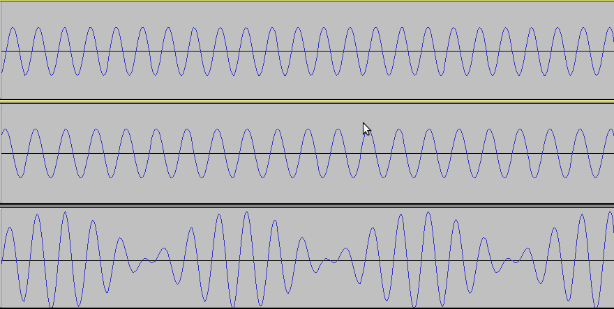
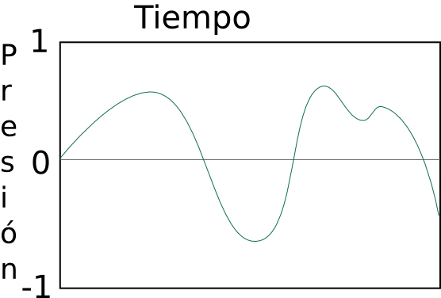
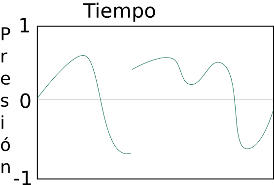
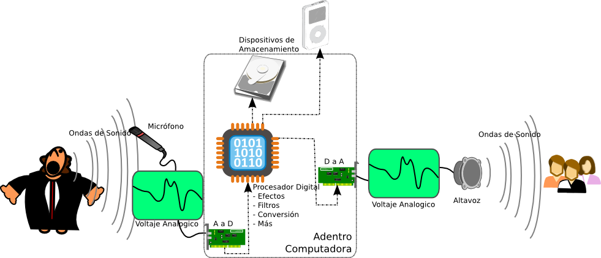
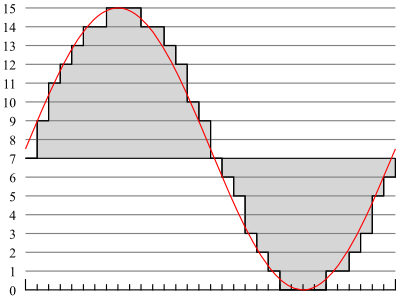

Introducción al Almacenamiento de Audio
Sonido
El sonido (sound) que se mueve a través del aire se compone de
cambios pequeños en la presión de aire (air pressure) que se mueven
rápidamente (a la velocidad del sonido: 1,230km/h a nivel del mar),
desde su fuente de origen. En nuestros oídos hay una pequeña
membrana y un conjunto de huesos que son capaces de sentir estos
pequeños (y veloces) cambios de presión. Aquí hay una gráfica de un
detector de presión usado para grabar a un par de manos aplaudiendo una
vez. Este sample fue grabado usando un micrófono durante 5/100mas
de segundo o 0.05 segundos. Para escuchar el
archivo de sonido, descárgalo a tu
commputador y ábrelo usando VLC o Audacity:

Como
puedes ver en esta gráfica (llamada una "forma de onda" o "waveform"),
un sonido que para nosotros parece un evento instantáneo está en
realidad compuesto de varios cambios distintos de presión. Las
puntas por encima de la mitad de la gráfica indican presión más alta, y
las puntas por debajo de la línea divisoria indican presión más
baja. Las áreas en las que la curva azul se aleja más del centro
(ya sea hacia arriba o hacia abajo) son áreas altas (en volumen o
intensidad). Las áreas en las que la curva se mantiene cerca del
centro son áreas mas calladas. En esta gráfica la parte más
intensa del aplauso es al principio, luego va disminuyedo con el tiempo
(recuerda que la gráfica entera sólo dura 5 céntimos de un segundo).
Para capturar o grabar estos cambios de presión usamos un micrófono
(microphone). Un micrófono tiene un componente que es susceptible
a diferencias minúsculas de presión (como un globo de aire muy
pequeño), y combina esto con un componente que puede cambiar la
cantidad de voltaje eléctrico que se mueve a través de un
circuito. Hay muchos métodos para hacer esto, pero el resultado
final es que todos los micrófonos convierten los cambios de presión de
aire que pasan a través de ellos a cambios en voltaje eléctrico que
pueden enviar a través de un cable hacia un equipo de grabación, en
este caso un sistema de computador.
El sonido generalmente no mueve nada de aire, sino que simplemente
lo comprime o descomprime a una presión más alta o más baja durante
cada porción de segundo. Por esto, los cambios de presión por
encima y por debajo de la curva deben ser balanceados y cancelarse
mutuamente. Cada vez que la presión se mueve a través de todas
las fases: hacia arriba sobre el centro, luego de vuelta al centro,
luego hacia abajo debajo del centro, y luego nuevamente de vuelta al
centro, formando una vuelta completa, esto se le conoce como un ciclo
(cycle). La cantidad de ciclos que un sonido completa por segundo
se conoce como la velocidad de sonido o frecuencia (frequency), y la
unidad para medirla es el Hertz, abreviado Hz. Así que si un
sonido en particular completa 500 ciclos por segundo, es un sonido de
500Hz. También podemos usar prefijos métricos para esta
unidad. un sonido a 31,000Hz se puede escribir como 31kHz.
Sólo como referencia: el oído humano puede detectar sonidos desde
aproximadamente 20Hz hasta cas 20kHz.
La manera en que nosotros escuchamos esta frecuencia es en forma de
tonos. Es posible que tengamos un tono con una sola
frecuencia. Un ejemplo de esto se ve aquí debajo con una
frecuencia de 2kHz y la duración de la gráfica es de sólo 0.01 segundos:

Como puedes ver,
toma solamente 1/2000mos de segundo para que la onda se mueva desde el
centro, hacia arriba, hacia abajo a través del centro, y hacia arriba
de vuelta al centro. Aquí hay un ejemplo
más largo
de mismo sonido para que lo escuches (descárgalo y ábrelo en VLC o
Audacity). Puedes ver que este sample de un tono puro es muy
distinto al ejemplo anterior de un aplauso. Esto es porque la
mayoría de los sonidos que escuchamos no son de una frecuencia exacta,
sino de una mexcla de frecuencias que las escuchamos todas a la misma
vez. Lo que ocurre es que escucharemos miles de distintas
frecuencias cada segundo, cada una por una cantidad muy pequeña de
tiempo. La manera en la que esto occurre es que las ondas de las
frecuencias van a trabajar juntas para hacer esa porción de sonido más
intensa, o trabajarán una contra la otra para debilitar la intensidad
de esa porción de sonido.
Abajo hay dos sonidos, el primero de 2.333kHz y el del midio de
2.000kHz, los cuales, al escucharse al mismo tiempo, forman el tercer
sonido:

Puedes ver en esta imagen que donde las partes altas y bajas de las
ondas van juntas y alineadas, la tercer onda aumenta. Cuando las
primeras dos no están alineadas, se cancelan unas a otras, y la onda
combinada se reduce. Este archivo
de audio
va a reproducir los tres tonos, primero el de 2.333kHz, luego el de
2.000kHz, y luego la combinación de ambos. Combinando los
conjuntos correctos de frecuencias, por la duración correcta, se puede
crear cualquier sonido imaginable.
Como vimos anteriormente, cuando combinamos frecuencias distintas,
la altura de las ondas cambia. Esta altura (tanto positiva como
negativa) se llama la amplitud, y representa cuán alto es un sonido --
tambien conocido como la intensidad (intensity) de un sonido.
Mientras más atas las ondas, mayor o más intenso sera el sonido que
escucharás. Esta escala por lo general se mide en decibeles
(dB). Los decibeles van desde cero (0dB) siendo el sonido de
menor intensidad perceptible por el oído humano (a 1kHz), a 194dB que
es el sonido de mayor intensidad que se puede crear en la atmósfera de
la Tierra. Algunos ejemplos: una respiración camada produce un
sonido de 10dB, una conversación típica es de 40-60dB, un TV a un nivel
normal es de 60dB, un carretera con mucho tráfico llega a 85dB, un
martillo perforador llega a 100dB, el motor de un avión jet es de
130dB, y un disparo de rifle es de 160dB.
Advertencia sobre daños auditivos:
Sonidos muy altos, especialmente
cuando se escuchan por largos periodos de tiempo, pueden dañar
permanentemente parte del oído humano. Si pasas largos periodos
de tiempo (8-10 horas al dia por 6 meses) cerca de una carretera de
mucho tráfico o si pasas sólo algunos minutos cerca del motor de un
jet, puedes ocacionar daños serios y permanentes a tu audición.
Para ver un ejemplo de cómo diferentes intensidades de sonido se
presentan en una gráfica, veamos esta pista de audio,
del trailer de la películar de código abierto Sintel, en
Audacity. Mientras escuchas el archivo, puedes ver las partes más
altas mostrando cimas (peaks) más altos (hacia arriba y hacia abajo del
centro) en la escala de intensidad. Si quieres primero ver el
video que va con el audio, lo puedes encontrar aquí.
Modulación de Códigos de Pulso (PCM) - Propiedades de Ondas
Cuando las ondas de sonido, o las ondas de cambios de presión de
aire, se mueven a través del aire, siempre varían levemente.
Nunca hay saltos instantáneos de presión, sino sólo cambios leves de
presión que ocurren en cantidades de tiempo increíblemente
cortas. Si nos aceracamos a una duración de tiempo lo
suficientemente corta, siempre va a haber una curva suave y leve, como
las que vimos arriba. Matemáticamente esto se llama una curva
continua (tanto en tiempo como en frecuencia).
Por ejemplo, la siguente es una curva de sonido posible (y hasta
típica):

Por el contrario, la siguente curva es imposible, porque la presión
no puede saltar instantáneamente de un valor a otro:

La siguente curva también es imposible: siempre debe haber alguna
cantidad de presión (aunque sea cero); la presión nunca puede
simplemente desaparecer:

Conversión Análogo a Digital
Cuando hacemos una grabación análoga de un sonido, digamos en un
casette o en un disco de vinil, estamos grabando los cambios de voltaje
enviados por el micrófono que capturó los respectivos cambios de
presión de aire. Sin embargo, equipos digitales (CDs,
computadores, teléfonos móviles, etc) no son capaces de almacenar esta
data continua. Para un equipo digital, todo debe ser separado y
convertido a números (unos y ceros). De modo que un equipo digital
puede grabar un número indicando la cantidad de voltaje emitida por el
micrófono. El único problema es que no puede hacer esto en cada
instante, dado que tiene un número limitado de veces por segundo en las
que puede hacer una lectura del voltaje y grabar su valor como un
número. El térmio general usado para este proceso es una
conversión análoga a digital (Analog to Digital Conversion) (A to D,
A-D,
ADC).
Afortunadamente, los equipos eléctricos modernos son muy poderosos,
y pueden fácilmente hacer una de estas conversiones análoga a digitales
varios miles de veces por segundo, con cada conversión llamándose un
"sample". De hecho, son capaces de grabar tan rápidamente que el
oído digital no puede ni siquiera distinguir que el sonido ha cambiado
de análogo a digital! Lo mismo pasa cuando escuchamos audio
digital. El equipo digital hace una conversión digital a análoga
(Digital to Analog Conversion) (D to
A, D-A, DAC) para determinar los números de voltaje almacenados de
vuelta a voltajes reales eléctricos. El voltaje entonces se
transmite a un parlante o bafle (o a bocinas pequeñas dentro de
audífonos), que usan los cambios de voltaje para activar un equipo que
puede crear cambios rápidos de presión de aire...y nosotros escuchamos
sonido.
Estas conversiones análogo-a-digital y digital-a-análogo son
absolutamente esenciales para todo audio, pero también se pueden
aplicar a muchas otras cosas. De hecho, cualquier cosa que se
pueda representar en términos de voltaje eléctrico se puede convertir y
usar como una señal digital. Estas señales pueden ser de algo tan
simple como establecer el nivel de luz en una habitación, o tan
complicado como controlar el motor de un auto cuando se presiona el
pedal de aceleración.

Para más información sobre estas conversiones A-D y D-A puedes ver
estos artículos:
http://en.wikipedia.org/wiki/Analog-to-digital_converter
http://es.wikipedia.org/wiki/Conversión_analógica-digital
http://en.wikipedia.org/wiki/Digital-to-analog_converter
http://es.wikipedia.org/wiki/Conversor_digital-analógico
Así que una vez una grabación digital ha capturado una señal de
voltaje y hecho una conversión análogo a digital, necesita almacenar
esta data digitalmente, aunque sea sólo por un momento mientras la
transfiere a otro equipo. En general a seto se le llama
cuantificación digital (Quantization) (http://en.wikipedia.org/wiki/Quantization_(signal_processing)
http://es.wikipedia.org/wiki/Cuantificación_digital).
Hay muchas maneras de hacer esto, pero la más común usada para audio es
la Modulación de Códigos de Pulso (Pulse Code Modulation o PCM).
http://en.wikipedia.org/wiki/Pulse_code_modulation
http://es.wikipedia.org/wiki/Modulación_por_impulsos_codificados
El
PCM toma un "sample" a una cierta velocidad (un conjunto de pulsos cada
X microsegundos) y los almacena como un "código" en una escala.

Aquí puedes ver un ejemplo
de una curva de voltaje en color rojo. La línea en gris simboliza
la codificación respectiva para la señal (en una escala de 0-15,
4-bit). Cada marca en el extremo de abajo es una unidad de tiempo.
Aquí hay otro ejemplo, esta vez usando el mismo tono de 2kHz que
usamos arriba. Esta vez la gráfica es sólo 1/1000mos de segundo
(0.001 segundos). Cada punto que vez en la gráfica es donde un
sample de audio se tomó.

Bits Por Sample
Uno de los factores que determina la calidad
auditiva de un archivo de audio digital es el número de bits que se
usan para almacenar el valor del voltaje que se convirtió a señal
digital. A esto se le refiere comúnmente como la profundidad del
sample. Cuando trabajamos con imágenes en este curso, usamos
8-bits para cada uno de los tres canales de color (24-bit color).
En audio, el formato más común que verás es 16-bit, que nos da 2^6 o
65,536 posibles valores para cada conversión A-D. Esto es lo que
se usa en medios como CDs y iPods. Sin embargo, cuando
profesionales de audio trabaan en estudios de grabación, muchas veces
usan valores de 24-bit (2^24 o 16,777,216 valores posibles) para
sonidos más enriquecidos. El usar menos bits a veces causará que
el audio no reproduzca los sonidos muy bien porque todo lo que esté por
fuera del registro de valores posibles se recortara (clip).
Aquí hay un ejemplo de un recorte (clipping):

Puedes
ver que la data que está por fuera de los valores que pueden ser
representados no se reproduce correctamente. Esto puede sonar
como ruido o como sonidos mudos en tu grabación de audio.
Además de almacenamiento de 16 y 24-bits, hay otro método de
almacenamiento llamado "punto flotante". Un punto flotante toma
32 bits por cada sample, pero se usa de forma diferente. 24 bits
de esa data se usa para almacenar un valor para el sample; los otros 8
bits se usan como un exponente. esto significa que los valores de
un punto flotante pueden representar cambios de valor extremadamente
pequeños, hasta cerca de cero. También significa que efectivamente no
hay ningún límite superior en la escala tanto en dirección positiva
como negativa). Un ejemplo de esto se puede encontrar en la
imagen del tono de 2kHz arriba en la sección de PCM. Nota que a
la izquierda, la escala va de -1.0 a +1.0, en vez de algo como 0 a
65,535. Esta es la forma típica en la que se escriben los valores
de un punto flotante. En el formato de puntos flotantes, la señal
puede aumentar sobre 1.0 o debajo de -1.0 sin pérdida (no hay recorte
en puntos flotante). Por esto, los valores de puntos flotantes se
usan muy a menudo durante el proceso de grabación y edición de audio.
Frecuencia de Sample
El otro componente importante que afecta
cómo suena una grabación de audio digital es la cantidad de samples A-D
que se toman en cada segundo, también conocido como la
frecuencia. este número usualmente se denota en Hertz (Hz), que
simplemente significa "ciclos por segundo". El aspecto más
importante al escoger una frecuencia de sample es el teorema
Nyquist. Este teorema indica que para reproducir un sonido con
precisión, necesitas tener una velocidad del sample que sea dos veces
tan alta como la frecuencia más alta que haya que reproducir.
Como ya aprendimos, el oído humano típicamente puede escuchar
frecuencias hasta alrededor de 20,000Hz o 20kHz. esto significa
que la frecuencia mínima que necesitamos para reproducir un sonido con
precición es 40kHz (20kHz multiplicado por 2). Sin embargo,
también debe haber un poco de espacio extra para filtrar cualquier
frecuencia no audible, así que las frecuencias de grabació más comunes
son 44.1kHz para audio de CD, y 48kHz para un audio digital
típico. También hay algunos formatos designados especialmente
para grabación que llegan hasta 96kHz y aún más allá. Estos
permiten crear filtros aún mejores para las frecuencias no-audibles.
Solo porque haga falta al menos 40kHz para poder grabar todo lo que
el oído puede escuchar no significa que las frecuencias menores no
tengan uso. Por ejemplo con los teléfonos, cada vez que una
llamada de un teléfono fijo sale del vecindario, o cada llamada de
teléfono móvil se digitaliza a 8kHz. esto suena bien cuando todo
sólo hace falta escuchar lo que la persona al otro lado está diciendo,
pero sonaría terrible si trataras de escuchar un concierto musical
digitalizado a 8kHz. En nuestros diás, sin embargo, un ingeniero
de audio podría atreverse a usar una frecuencia menor de 40kHz si
hubieran severas limitaciones de ancho de banda o de espacio para
almacenamiento. Para este curso usaremos a lo mínimo audio de
44.1kHz o 48kHz.
Endianidad (Endianness)
La endianidad (endianness) es un
artefacto del crecimiento de las tecnologías de sistemas en diferentes
organizaciones simultáneamente. Esto tiene que ver con la manera
en que los bytes se almacenan en la memoria de un computador. Los
detales de esto no son importantes para la creación de audio digital,
sólo importa saber que hay dos formatos diferentes: el Big-Endian y el
Little-Endian. No son compatibles por sí solos, pero programas de
software pueden convertirlos fácilmente.
Canales
Los canales (channels) usados en audio digital son
diferentes de como los canales se usan en imágenes. en este caso,
cada canal es una grabación completamente separada, que simplemente se
ajustá para que se escuche (y muchas veces se grabó) a la misma
vez. Los canales usualmente se usan para representar la dirección
de la cual puede provenir el audio (desde la derecha o desde la
izquierda, por ejemplo).
El audio estéreo tiene dos canales, un canal izquierdo y un canal
derecho. esto permite crear sonidos que parece que provenieran de
una dirección o de la otra. Los CDs y la radio FM usan sonido
estéreo. (http://en.wikipedia.org/wiki/Stereo_sound
http://es.wikipedia.org/wiki/Sonido_estereofónico)
El formato más avanzado se llama sonido envolvente (surround
sound), que por lo general se describe como si tuviera 5.1
canales. Los cinco canales principales son delante-izquierda y
delante-derecha (igual que en estéreo, y se usan cuando sólo hay
salidas estéreo disponibles), delante-centro, detrás-izquierda, y
detrás-derecha. El 0.1 canale es llamado el canal de efectos de
baja frecuencia y está diseñado para uso con sub-woofers que sólo
producen sonidos de 3-120Hz. dada esta baja frecuencia, es
posible usar una frecuencia de sample mucho más baja con este
canal. Sin embargo, la mayoría de los equipos de computador sólo
tratan este canal como su propio canal separado, y por eso los
computadores que usan surround sound se suele decir que tienen sies
canales en vez de sólo 5.1, (http://en.wikipedia.org/wiki/Surround_sound
http://es.wikipedia.org/wiki/Surround)